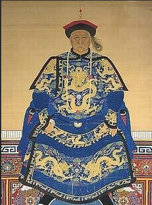
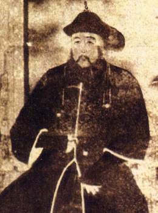
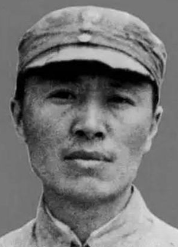

秘史
西方报刊中的辛亥革命

1911年10月21日，英国TheGraphic增刊关于辛亥革命的图文报道，标题为：“西方文明正在捶打束缚中国的锁链”。
其中评论称满清二百五十多年的统治已经直接受到革命的冲击，孙中山很有可能成为共和国的第一任总统。
在武昌起义爆发仅11天后的英国报刊上就已经预见到革命的走势，反而在中国可能有很多人还未听闻孙中山的名字。
博文排行榜
最新资讯
博主每周人气榜
最新资讯
鳌拜与多尔衮
两位皇太极的忠勇之臣，在顺康年间各自走向不归路


鳌拜与多尔衮是根本就不能相提并论的两个人
多尔衮趁火打劫入中原 是大清王朝真正的缔造者 皇太极虽然在东北改后金 为清 但也毕竟只是一个 关外小国而已 真正的大清帝国是多尔衮缔造的
鳌拜只不过是一个战功显赫的将军而已 辅政大臣与摄政王 有着天壤之别 质的区别
多尔衮与顺治 孝庄三人谜中谜 案中案 世人谁能说得清 易叔易子 易子易父 易嫂易妻 千古之谜而已
毛主席身边的第一保镖是谁？
毛主席亲点高手

陈龙
毛主席身边是有管家的这是总所周知的，替毛主席打点生活起居，那么有没有人负责保护毛主席的人身安全呢？毛主席身边有没有第一保镖呢？
答案当然是有的，这个人，就是陈龙，辽宁抚顺人。